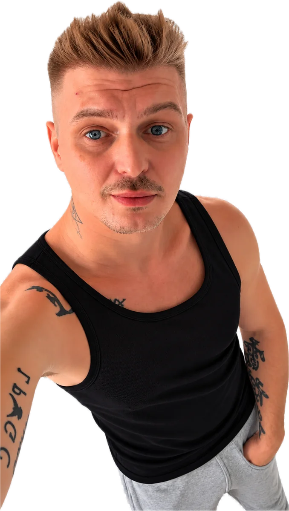
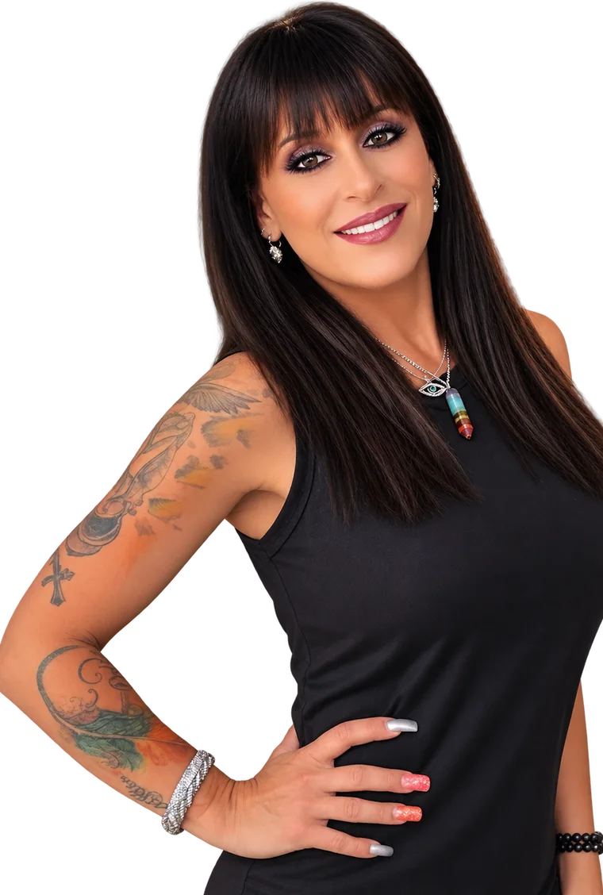

Andrej
Kneisl
Vienna
Music connects us.
FIRST SHOW // 27 JANUARY 2027
When the music begins, distance becomes zero.

Vienna

Melbourne
Andrej and Georgie host every show together, as equals, from opposite ends of the day. One of them is always up too late. The other is always up too early.
DISTANCE // ZERO puts Vienna and Melbourne in the same virtual studio for new electronic music, live guests and the kind of conversation you don't get in a press junket.
Serious music.Serious production.Completely unserious hosts.
Electronic music // trance // progressive and melodic // new releases // artist discovery // DJs, producers, singers, songwriters and musicians // international guests // live performances and DJ sets // conversation // your questions, live.
The interviews are not standard PR. Before every show, Andrej and Georgie go through a guest's public stories, old interviews and social posts, then build the conversation around what they find.
Expect the question nobody has asked yet, and probably the photo the guest hoped everyone had forgotten.
NOT ON AIR YET
27 January 2027FIRST BROADCAST // 10:00 VIENNA // 20:00 MELBOURNE
The distance becomes zero
Wednesday 27 January // 10:00 Vienna // 20:00 Melbourne
The archive opens with episode one on 27 January 2027. Every show will be here in full, with guests and chapters.
The sound of the show. From 27 January 2027, every track played on air is listed here per episode.